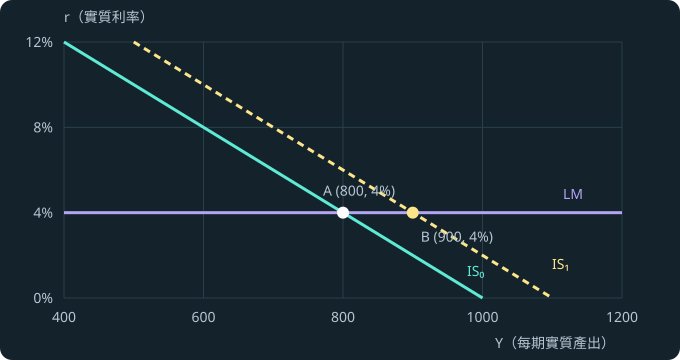

現代 LM：央行設定利率
央行固定利率時，貨幣供給要配合需求調整，LM 因此呈水平。
- 說明水平 LM 與傳統 LM 的假設差別
- 分析固定利率下的財政政策
- 辨識 i 與 r 的符號轉換
先備知識：傳統 LM：固定貨幣供給；基本代數運算。
01概念理解
課堂現代 LM（Modern LM）將央行設定的利率當作政策工具；央行調整貨幣供給以維持目標，於是 LM 在利率—產出圖上是水平線。這不代表貨幣市場消失，而是供給配合需求變動。
像水塔的控制器固定水壓：住戶用水增加時，控制器增加供水以維持水壓。利率像被維持的水壓，貨幣供給像配合調整的供水量。
譬喻的限制：水壓比喻不能解釋預期通膨與風險。現實政策工具通常是名目利率，要討論實質利率仍需交代預期通膨。
02公式與假設
第 23–25 頁圖的縱軸為名目利率 i；第 38 頁改用實質利率 r。本頁先固定 πᵉ，以 r̄ ≈ ī − πᵉ 銜接 IS。數值例題設 πᵉ = 0，且不考慮利率下限與風險溢酬。
| 符號 | 意義與單位 |
|---|---|
| ī、r̄ | 央行名目目標與對應實質利率；每期小數 |
| πᵉ | 預期通膨率 |
| M、P、L | 貨幣供給、物價、實質貨幣需求 |
| Y | 每期實質產出 |
03逐步推導
- 先固定央行利率與預期通膨，得到水平的實質利率線。
- 與向下的 IS 聯立，決定均衡 Y。
- 若 G 增加，IS 右移；央行維持同一利率時，均衡 Y 增加。
- Y 增加使貨幣需求提高；為維持利率，央行需配合增加 M/P。
- 若央行降低目標利率，水平 LM 下移，沿既有 IS 到較高的 Y。

04例題與練習
自編例題：Y = 1,000 − 5,000r，央行維持 r = 4%。財政擴張使 IS 變為 Y = 1,100 − 5,000r。求前後產出。
查看解答與步驟
- 原產出：1,000 − 5,000 × 0.04 = 800。
- 新產出：1,100 − 5,000 × 0.04 = 900；增加 100。
- 若 L = 0.5Y − 1,000r，實質貨幣需求由 360 增至 410。
- 央行配合增加實質供給 50，才可維持 4%。不能同時假設供給仍固定為 360。
自編練習：維持原 IS：Y = 1,000 − 5,000r。目標利率由 4% 降為 3%，產出如何變化？
查看解答與步驟
原 Y = 800，新 Y = 850，增加 50。LM 水平線下移，沿原 IS 移動。若預期通膨會變動，需先重新換算實質利率，不能直接套用此數值結果。
05常見錯誤
水平 LM 表示利率永遠不變
固定的是一次分析中的政策設定。
正確判斷 → 央行改變目標時，整條水平線會移動。固定利率還能同時固定 M
需求變動時兩者通常不能同時維持。
正確判斷 → 用 M = P × L 檢查所需供給。名目降息必然同幅實質降息
實質利率也受預期通膨影響。
正確判斷 → 寫出 r ≈ i − πᵉ 再判斷。06考前重點
- 先確認題目採固定供給還是固定利率。
- 固定利率下的財政擴張，供給需要配合。
- 課堂不同頁面使用 i 或 r，必須明確轉換。
07參考資料
課堂資料
04 The IS-LM Model and Aggregate Demand.pdf
講義日期：2026/11/6；第 19–31 頁（依 PDF 頁序）。來源由使用者提供。
自編教學整理
生活譬喻、線性代數推導、圖形及數值題依課堂概念自編，並非逐字講義或老師指定題目。本篇未引用外部資料；模型延伸與近似條件已在正文說明。原始 PDF 未公開附載。